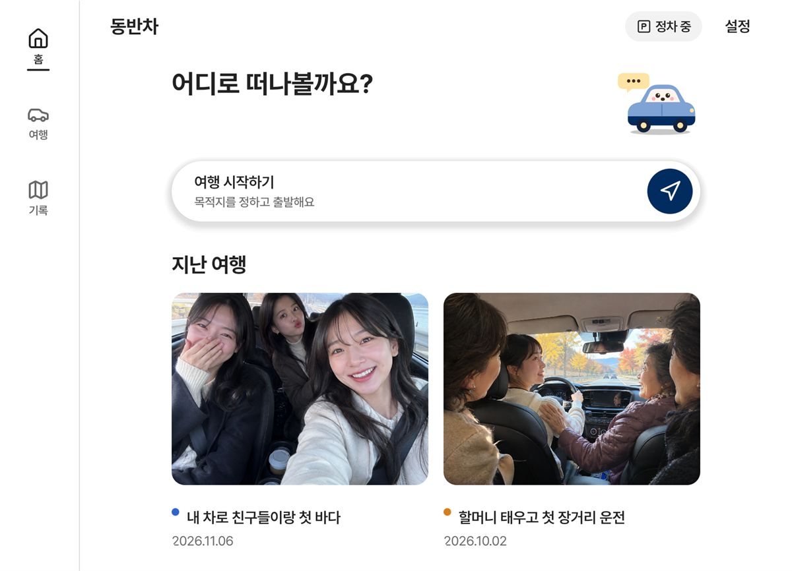
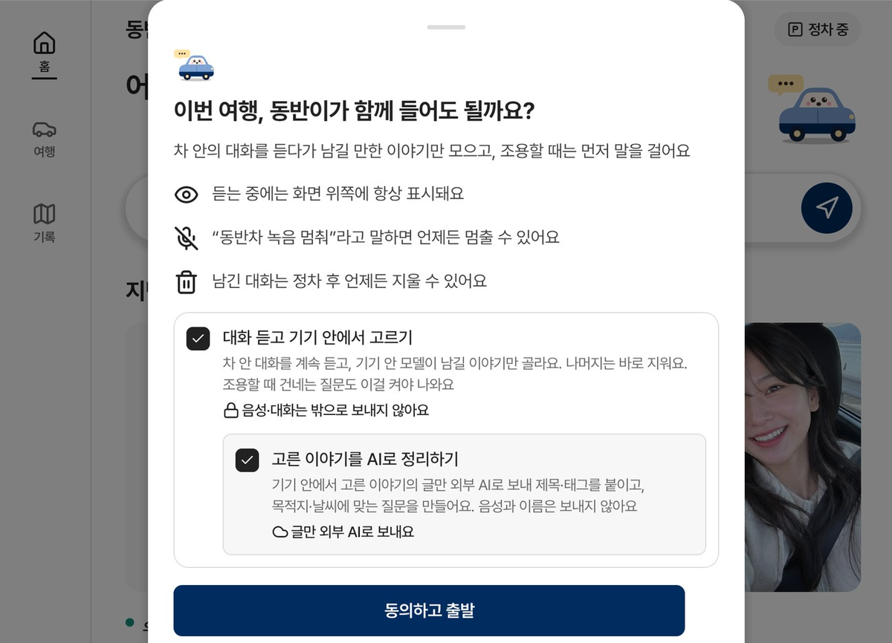
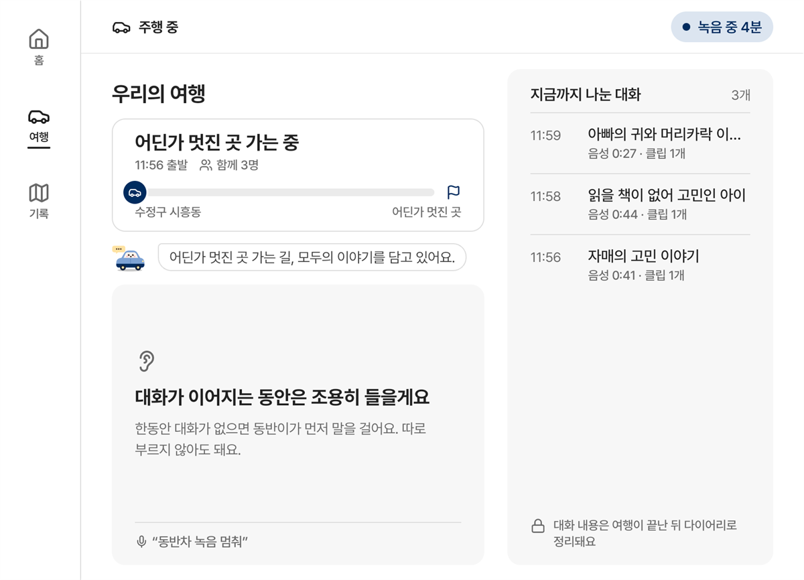
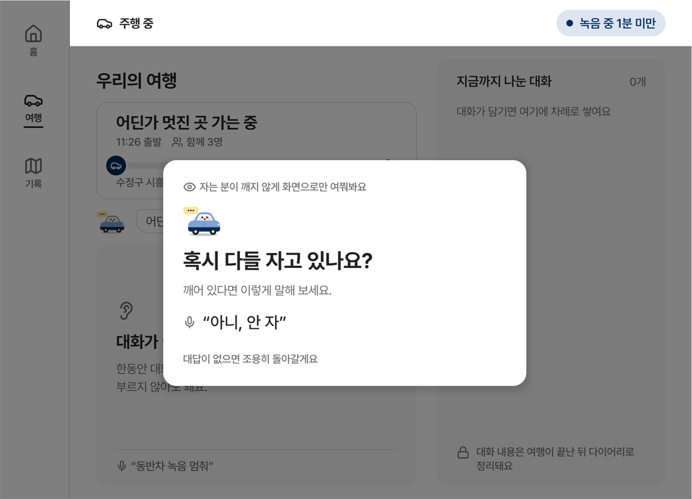
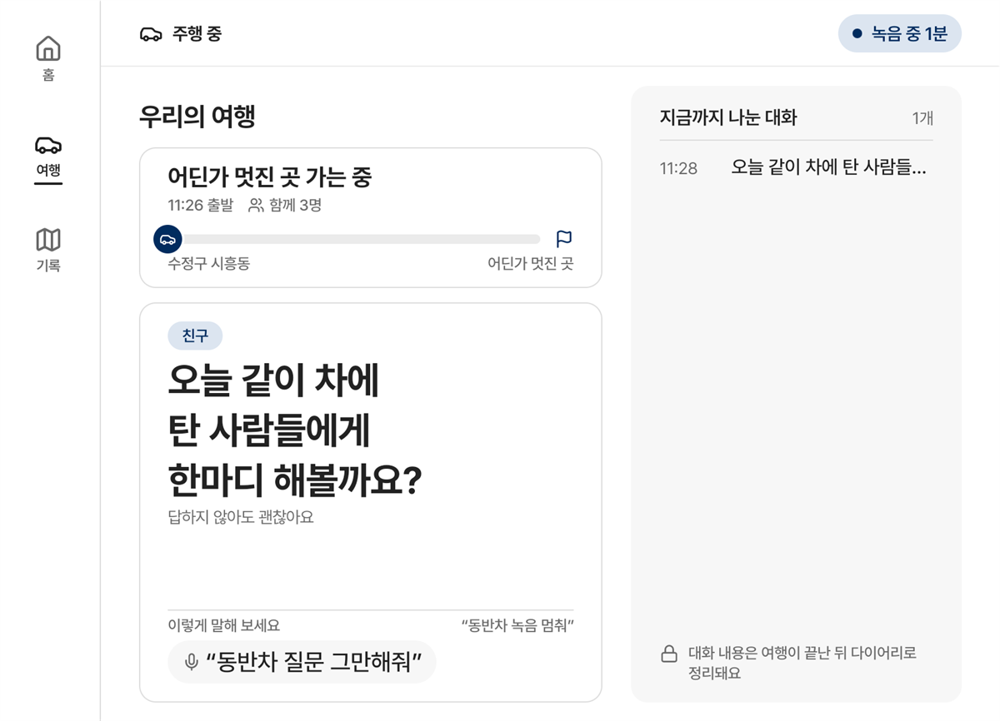
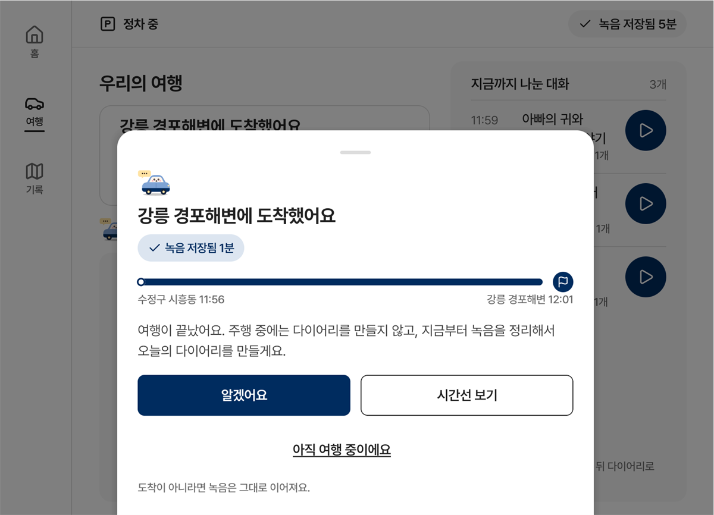
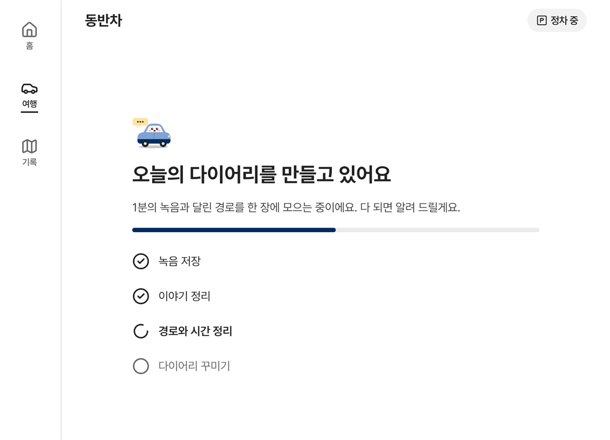
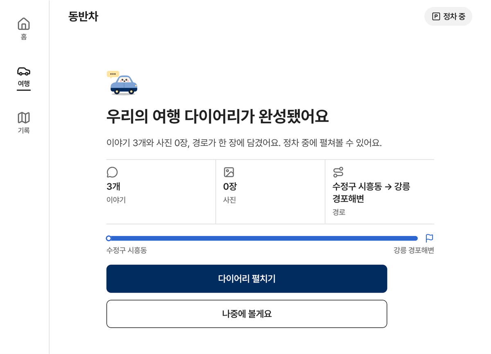
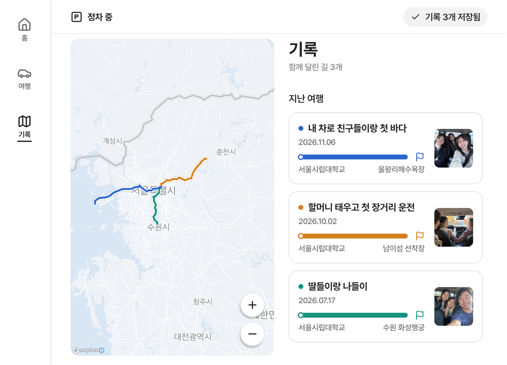
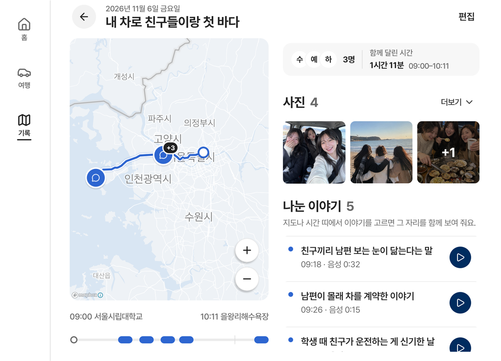

이동하는 시간은 기록에서 빠집니다
사진과 영상은 대개 도착한 뒤에 찍힙니다. 대화가 끊기면 동승자는 잠들거나 각자 휴대폰을 봅니다. 함께 탔지만 함께하지 못하는 시간이 생깁니다.
동반차는 Pleos Connect(Android Automotive OS)용 차량 앱입니다. 함께 탄 사람들이 나눈 이야기 중 다시 듣고 싶은 순간과 달려온 길을 기록합니다. 대화가 끊기면 조심스럽게 이야기를 이어 주고, 도착하면 그날의 주행을 다이어리로 정리합니다.
APK는 GitHub Release에서 받을 수 있어요.

시연 영상
영상 1
영상 2
한눈에
사진과 영상은 대개 도착한 뒤에 찍힙니다. 대화가 끊기면 동승자는 잠들거나 각자 휴대폰을 봅니다. 함께 탔지만 함께하지 못하는 시간이 생깁니다.
출발 전에 탑승자 모두의 동의를 받고, 모든 대화를 저장하지 않습니다. 여행이 끝나면 날짜, 함께한 사람, 달려온 길, 사진, 나눈 이야기를 한 권의 다이어리로 정리합니다.
위치, 기어와 문 열림 같은 차량 상태, 마이크, 탑승자 모두가 함께 보는 화면입니다. 동반차는 누구도 휴대폰을 들지 않고 이 시간을 기록하는 방법을 제안합니다.
시연 흐름
Pleos Connect 에뮬레이터(v2.1.0)에서 앱의 2/3 분할 화면을 캡처한 화면입니다. 지난 여행 3개는 데모 데이터입니다.
1단계
홈에서 여행 시작하기를 누르고 함께 가는 사람을 정합니다. 대화 듣기와 AI 정리 동의를 따로 받습니다.

2단계
목적지까지의 길 리본, 녹음 상태, 지금까지 저장한 대화만 보입니다. 버튼은 정차 중에만 나옵니다.

3단계
차 안이 오래 조용하면 소리 없이 화면으로만 “혹시 다들 자고 있나요?”를 묻습니다.

4단계
“아니, 안 자”처럼 말로 답하면 여행지와 동행 관계에 맞는 가벼운 질문을 소리로 읽어 줍니다.

5단계
차량 내비가 도착을 알리거나, 목적지 300m 안에서 기어가 P가 되면 여행을 스스로 마칩니다.

6단계
정차한 뒤 녹음 저장, 이야기 정리, 경로와 시간 정리, 다이어리 꾸미기 순서로 진행합니다.

7단계
날짜, 제목, 함께한 사람, 실제 주행 경로, 함께 달린 시간, 사진, 나눈 이야기가 한 장에 담깁니다.

8단계
지금까지의 여행은 지도 위에 기록마다 다른 색의 경로로 쌓입니다. 경로나 카드를 누르면 그날의 다이어리가 열립니다.

9단계
이야기마다 제목, 태그, 음성 길이가 붙고 눌러서 다시 듣습니다. 이야기를 고르면 지도와 시간 띠에서 그 자리를 함께 보여 줍니다.

기능
기술
남길지 말지는 기기 안의 작은 모델이 정합니다. 버려지는 대화는 처음부터 끝까지 차 밖으로 나가지 않습니다.
KoELECTRA-small을 INT8로 줄였습니다(56MB → 15MB). 묶음당 판정 25ms.
실제 차 안 대화 37묶음에서 남길 대화 25개 중 24개를 지켰고, 정확도는 0.84입니다.
CPU는 평균 2.9%(권장 3% 이하). 동반차 앱 프로세스만 측정했습니다.
주행 중에는 보기 전용 화면만 열고, 차량 제어 API는 쓰지 않습니다.
실행·설치
42gether_dongbancha_release.apk를 받습니다.adb install -r 42gether_dongbancha_release.apkRelease APK에는 지도와 대화 요약 키가 들어 있어 따로 설정하지 않아도 모든 기능이 동작합니다.
Android SDK가 필요합니다.
./gradlew installDebug